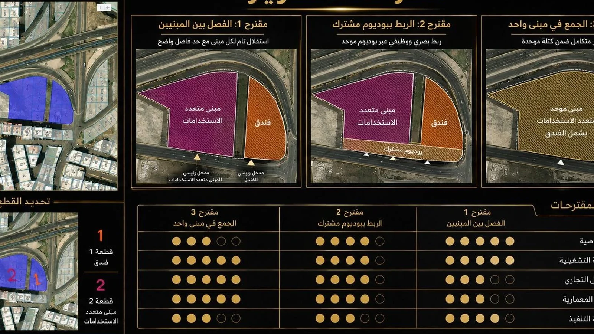
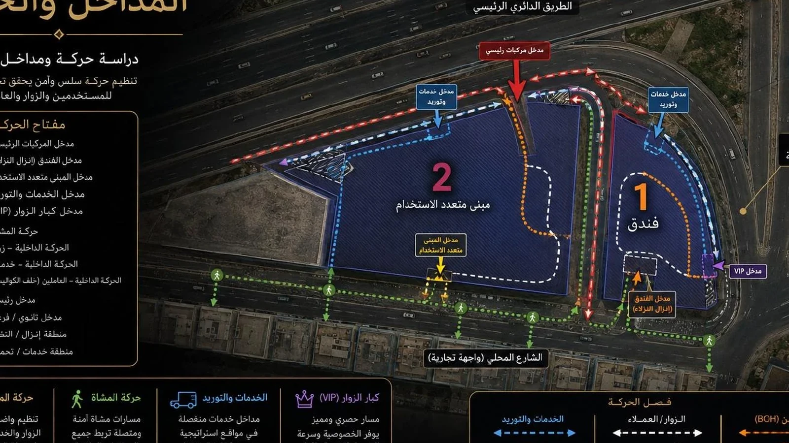

Efficiency-Led Route
Prioritise saleable efficiency and controlled amenity burden.
GFA—SELLABLE—UNITS / KEYS—MARKETABILITY—
BADR helps investors and landowners read the site, compare development scenarios, test financial assumptions and shape a project with a clearer market and delivery logic.
Change the site assumptions. Compare directions. Understand the trade-off before deciding which route deserves deeper study.
Prioritise saleable efficiency and controlled amenity burden.
Balance product mix, identity, landscape and phasing.
Trade some efficiency for stronger identity, experience and premium positioning.
Indicative spatial exploration. Not a feasibility study or investment recommendation.
Access, frontage, context and constraints.
Density, products, mix and development logic.
Sellable area, cost, revenue, phasing and return.
Positioning, identity, premium zones and reason to choose.
Masterplan, architecture, landscape and experience.
BIM, coordination, 4D and 5D.
Development advisory, masterplanning, urban design, architecture, BIM, 4D and 5D are connected around one investment question.
Land reading • option testing • product logic
EXPLORE →Masterplanning + ProductDensity • unit mix • premium zones • market identity
VIEW PROJECTS →Urban Design + PlacemakingStreet character • public realm • lifestyle identity
VIEW URBAN →ArchitectureConcept • plans • façades • experience
VIEW PROJECTS →BIM + Digital DeliveryArchitecture • Structure • MEP • coordination
OPEN BIM →4DSequence • phasing • logistics • time
VIEW 4D →5DQuantities • cost • commercial visibility
VIEW 5D →Use the dashboard to understand how land area, build factor, saleable efficiency, pricing, construction cost and land cost influence the indicative development story.
Illustrative phasing model; not a bankable project cash flow.
Cells display indicative ROI under simultaneous price and construction-cost movements.
BADR does not replace the investor, feasibility consultant or financial advisor. We connect the development, spatial and digital decisions so the project can be tested as one coherent proposition.
When product, positioning, arrival, architecture, phasing and cost logic reinforce each other, the project becomes easier to explain to partners, buyers and decision-makers.
That is how the site itself becomes a more investable story.


At Al Rehab Oasis, BADR compared development routes, product hierarchy, premium arrival, landscape and amenity logic before pushing deeper into design.
ATHAR shows how access, movement, program and development alternatives can be understood before architecture fixes the project into one form.


Land • context • constraints • advantage
Density • product mix • saleability • phasing
Revenue • cost • ROI • IRR • sensitivity • cash flow
Positioning • target user • premium logic • differentiation
Masterplan • architecture • landscape • experience
BIM • coordination • 4D • 5D • digital handover
We compare site capacity, product families, market logic and commercial consequence before fixing one answer.
We test the trade-off between inventory, identity, selling power, amenity burden, privacy and long-term brand value.
We use phasing, access, sales logic and 4D thinking to identify a sequence that protects cash flow and market perception.
5D, quantities and structured assumptions bring cost consequence into the discussion earlier.
We connect positioning, arrival, product hierarchy, landscape, massing and architecture around one development idea.
Risk studies make critical assumptions visible: market, product, cost, phasing, financing, sensitivity and technical coordination.
Demand logic, product mix, marketability and the assumptions that can change the investment story.
Commitment timing, cost sensitivity and phasing choices that may increase capital pressure.
Structure the project thesis, information and scenarios for a clearer institutional discussion — without presenting this as a financing or investment guarantee.
Site • area • constraints • ambition
Yield • balanced • premium
Spatial + financial assumptions
Product • identity • design
Architecture • BIM • 4D • 5D

Capital should enter the project after the opportunity has been tested — not before.
“A developer should not have to choose between commercial logic and architectural ambition. The real work is to make the two strengthen each other.”
A focused BADR workshop can support an early acquisition decision, development direction, product repositioning or pre-design brief.
BOOK A DEVELOPMENT WORKSHOP ↗Use the explorer above, then bring us the site and the development question you want to investigate further.